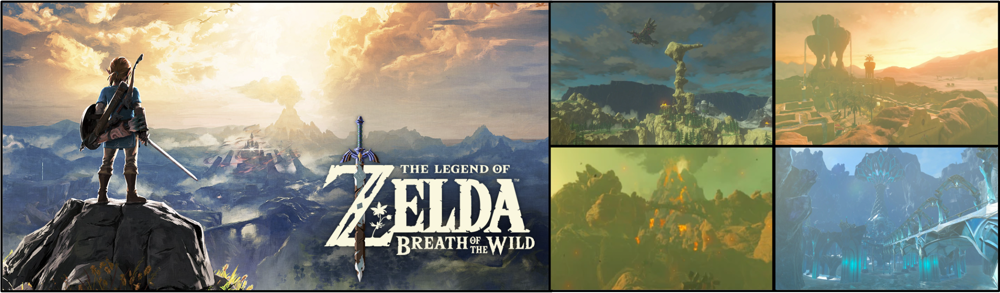

It goes without saying that BOTW is one of the most visually pleasing video games of all time.
Don't believe me? Take a look...
I could say more, but the game really speaks for itself
Personally, I think that this game some of the greatest video game music ever.
If I just hear the Ganon fight music, I'm simultaneously filled with fear, energy, and nostalgia
imma just list the monsters bc idk what else to write about
and obviously, most importantly:
KOROKS - these little monsters wasted so much of my time
if you haven't played the game, just go through this website and you'll understand the pain: all korok seed locations